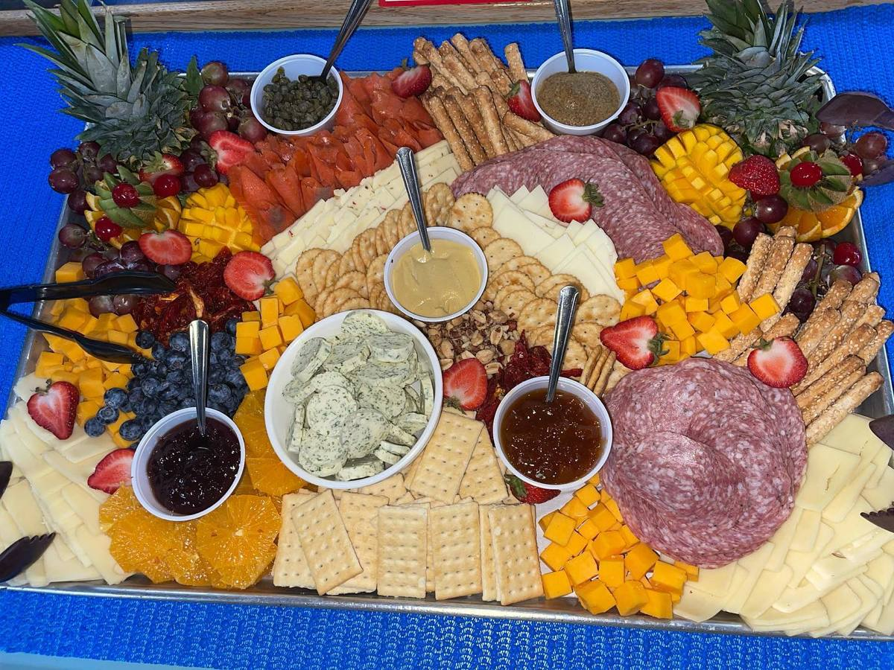

Private Dining at Home
A seated, multi-course dinner in your own dining room, with the menu planned together a week or two ahead. On the day, Jonathan does the shopping, cooks in your kitchen, serves every course, and leaves the kitchen cleaner than he found it. Dates book around the fishing season, so ask early.